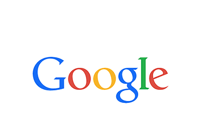
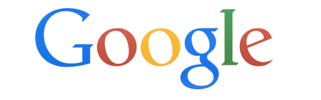
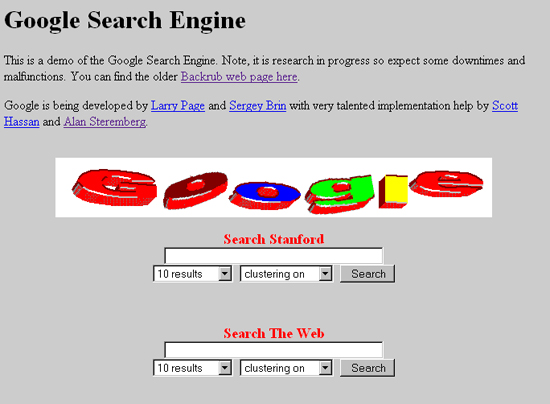
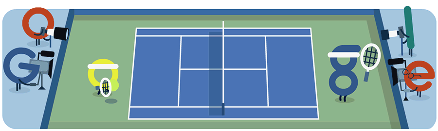
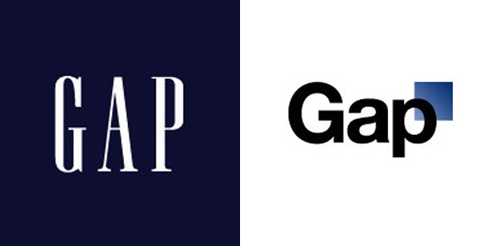
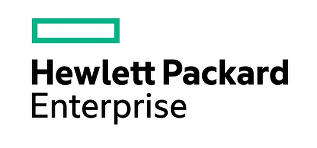
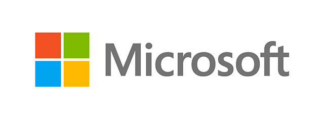

<!Doctype html>
<html>
<head>
	<meta http-equiv="Content-Type" content="text/html; charset=UTF-8" />
	<meta name="viewport" content="width=device-width, initial-scale=1.0" />
	<title>Google 换 Logo了！启用无衬线字体 | 菜鸟教程</title>

  <meta name='robots' content='max-image-preview:large' />
<link rel="canonical" href="google-new-logo.html" />
<meta name="keywords" content="Google 换 Logo了！启用无衬线字体">
<meta name="description" content="「没有一点点防，备也没有一丝顾虑，你就这样出现，在我的世界里，带给我惊喜，情不自已。」  没错，正如这首歌里唱到的，你已经看着很眼熟的 Google 突然换 Logo 了，六个字母换成了无衬线字体，比之前的看起来更加柔和，Google 把这个字体称作「Product San」。  Google 副总裁、产品经理 Tamar Yehoshua 表示，新 Logo 的设计「简单、整洁、多彩、友好」，主要是为了适应多个终端的视觉需求，而旧 L..">
		
	<link rel="shortcut icon" href="https://static.runoob.com/images/favicon.ico">
	<link rel="stylesheet" href="../wp-content/themes/runoob/style-v=1.176.css" type="text/css" media="all" />
<link rel="stylesheet" href="https://cdn.staticfile.org/font-awesome/4.7.0/css/font-awesome.min.css" media="all" />	
  <!--[if gte IE 9]><!-->
  <script src="https://cdn.staticfile.org/jquery/2.0.3/jquery.min.js"></script>
  <!--<![endif]-->
  <!--[if lt IE 9]>
     <script src="https://cdn.staticfile.org/jquery/1.9.1/jquery.min.js"></script>
     <script src="https://cdn.staticfile.org/html5shiv/r29/html5.min.js"></script>
  <![endif]-->
  <link rel="apple-touch-icon" href="https://static.runoob.com/images/icon/mobile-icon.png"/>
  <meta name="apple-mobile-web-app-title" content="菜鸟教程">
</head>
<body>

<!--  头部 -->
<div class="container logo-search">

  <div class="col search row-search-mobile">
    <form action="../w3cnote.html">
      <input class="placeholder" placeholder="搜索……" name="s" autocomplete="off">
      
    </form>
  </div>

  <div class="row">
    <div class="col logo">
      <h1><a href="../index.html">菜鸟教程 -- 学的不仅是技术，更是梦想！</a></h1>
    </div>
        <div class="col right-list"> 
    <button class="btn btn-responsive-nav btn-inverse" data-toggle="collapse" data-target=".nav-main-collapse" id="pull" style=""> <i class="fa fa-navicon"></i> </button>
    </div>
        
    <div class="col search search-desktop last">
      <div class="search-input" >
      <form action="../index.html" target="_blank">
        <input class="placeholder" id="s" name="s" placeholder="搜索……"  autocomplete="off" style="height: 44px;">
      </form>
      
      </div>
    </div>
  </div>
</div>


<!-- 导航栏 -->
<div class="container navigation">
    <div class="row">
        <div class="col nav">
            

                        <ul class="pc-nav" id="note-nav">
                <li><a href="../index.html">首页</a></li>
                <li><a href="../w3cnote.html">笔记首页</a></li>
                <li><a href="android-tutorial-intro.html" title="Android 基础入门教程">Android</a></li>
                <li><a href="es6-tutorial.html" title="ES6 教程">ES6 教程</a></li>
                <li><a href="ten-sorting-algorithm.html" title="排序算法">排序算法</a></li>
                <li><a href="hadoop-tutorial.html" title="Hadoop 教程">Hadoop</a></li>
                <li><a href="zookeeper-tutorial.html" title="Zookeeper 教程">Zookeeper</a></li>
                <li><a href="verilog-tutorial.html" title="Verilog 教程">Verilog</a></li>
                <li><a href="../w3cnote_genre/code.html" title="编程技术">编程技术</a></li> 
                <li><a href="../w3cnote_genre/coderlife.html" title="程序员人生">程序员人生</a></li>
                
                <!--<li><a href="javascript:;" class="runoob-pop">登录</a></li>
                
                
                        <li>
                <a style="font-weight:bold;" href="https://www.runoob.com/linux/linux-tutorial.html#yunserver" target="_blank" onclick="_hmt.push(['_trackEvent', 'aliyun', 'click', 'aliyun'])" title="kkb">云服务器</a>
                </li>
                <li><a href="http://gk.link/a/104mQ" target="_blank" style="font-weight: bold;"onclick="_hmt.push(['_trackEvent', '极客时间', 'click', 'jike'])" title="我的圈子">极客时间</a></li>
            
                
                <li><a target="_blank" href="/shoppinglist" rel="nofollow">知识店铺</a></li> 
        -->
            </ul>
                        
              
            <ul class="mobile-nav">
                <li><a href="../w3cnote.html">首页</a></li>
                <li><a href="../w3cnote_genre/android.html" target="_blank" title="Android 基础入门教程">Android</a></li>
                <li><a href="es6-tutorial.html" target="_blank" title="ES6 教程">ES6</a></li>
                <li><a href="../w3cnote_genre/joke.html" target="_blank" title="程序员笑话">逗乐</a></li>
                
                <a href="javascript:void(0)" class="search-reveal">Search</a> 
            </ul>
            
        </div>
    </div>
</div>


<!--  内容  -->
<div class="container main">
	<div class="row">

		<div class="col middle-column big-middle-column">
	 			<div class="article">
			<div class="article-heading">
				<h2>Google 换 Logo了！启用无衬线字体</h2>				<h3><em>分类</em> <a href="../w3cnote_genre/net-2.html" title="互联网" >互联网</a> </h3>
			</div>
			<div class="article-body note-body">
				<div class="article-intro">
					<p>
</p><p>
「没有一点点防，备也没有一丝顾虑，你就这样出现，在我的世界里，带给我惊喜，情不自已。」
</p><p>
没错，正如这首歌里唱到的，你已经看着很眼熟的 Google 突然换 Logo 了，六个字母换成了无衬线字体，比之前的看起来更加柔和，Google 把这个字体称作「Product San」。
</p><p>
Google 副总裁、产品经理 Tamar Yehoshua 表示，新 Logo 的设计「简单、整洁、多彩、友好」，主要是为了适应多个终端的视觉需求，而旧 Logo 的设计只考虑了 PC 端的情况。确实，旧版的 Google 设计在手机、车载等屏幕上看起来并不是很清晰，线条略细导致视觉冲击感并不强烈。
</p><p>
不过我还是相信它是为了和「大厂」Alphabet 设计风格「靠近」：
</p><p>

</p>
<hr />
<p>
如果算上 Logo 微调的话，Google 其实已经换过好多次 Logo 了，只是像变化这么大的很少。
</p><p>
Google 2014 年的时候换了一次，是这样的：
</p><p>

</p><p>
Google 2013 年的时候也换过一次，是这样的：
</p><p>

</p><p>
你问区别在哪里？
</p><p>

</p><p>
在 2010 年到 2013 年的这段时间，扁平化还不是潮流，Google 在没有被拍扁的时候，Logo 是这样的：
</p><p>

</p><p>
很多国内人士对这个 Logo 印象深刻，因为在扁平化之后，Google 早已经退出中国了。
</p><p>
实际上，Google 使用最长时间的 Logo 是立体的，带有阴影的衬线字体设计，就是下面这个：
</p><p>

</p><p>
它从 1999 年一直使用到了 2010 年。
</p><p>
1998 年，Google 公司正式成立了，不够当时候的 Logo……
</p><p>

</p><p>
确定是亲生的嘛！Google 后面还带有一个「！」，毫无疑问是为了向当时的互联网巨人「Yahoo!」 致敬的。
</p><p>
在这个 Logo 的基础上，Google 的第一个节日徽标：火人节 Doodle 就此诞生了：
</p><p>

</p><p>
不过这个 Logo 还不算惨不忍睹，1997 年，Google 第一次出现的时候是这个样子的……
</p><p>

</p><p>
然而，当 Google 还不叫「Google」的时候……
</p><p>

</p><p>
用这只毛茸茸的手做 Logo 是什么意思……
</p>
<hr />
<p>
用 2014 年版的 Logo 做的最后一张 Google Doodle 是纪念 2015 年美国网球公开赛开幕：
</p><p>

</p><p>
而 2015 年新版 Logo 的第一张 Doodle 则是演绎了新 Logo：
</p><p>

</p>
<hr />
<p>
本次 Google 换标最大的变化是使用了无衬线字体。
</p><p>
无衬线体(Sans-serif) 专指西文中没有衬线的字体，与汉字字体中的黑体相对应，在电脑上代表性的无衬线体如 <em>Arial</em>，Mac 上 Helvetica (在 iOS 9 及 OS X 10.11 之后苹果设备的默认字体改为「苹方」依旧是无衬线体)。与衬线字体相反。该类字体通常是机械的和统一线条的，它们往往拥有相同的曲率，笔直的线条，锐利的转角，如我们常见的 Times New Roman。</p><p>


</p><p>
<em>*一张图说明无衬线字体和衬线字体的区别，左边为衬线字体，又明显的棱角；右边为无衬线字体</em>
</p><p>
普遍认为，在传统的正文印刷中，衬线体能带来更佳的可读性（相比无衬线体），尤其是在大段落的文章中，衬线增加了阅读时对字母的视觉参照。而无衬线体往往被用在标题、较短的文字段落或者一些通俗读物中。一些既具有历史感的品牌依旧保留着衬线字体的 Logo，诸如 LV，Gucci，Ermenegildo Zegna ，Yves Saint Laurent ，以及《纽约时报》。
</p><p>

</p><p>

</p><p>
相比严肃正经的衬线体，无衬线体给人一种休闲轻松的感觉。随着现代生活和流行趋势的变化，如今的人们越来越喜欢用无衬线体，因为他们看上去"更干净"，也看上去更现代，使用无衬线体的 Logo 设计越来越多，尤其是互联网公司，想 Google 这样一直使用衬线字体设计的 Google 确实不多。
</p><p>

</p><p>
不过把从衬线字体更换为无衬线字体也是要遭受一定的风险的，因为它给普通人带来的视觉冲击是很大的。深受美国人民喜爱的快时尚品牌 Gap 在 2010 年 10 月的时候突然更换了新 Logo，而它也一举代替使用了超过 20 年的旧版蓝底白字标识，然而最显著的改变就是从衬线字体换成了无衬线字体。不过这个毫无征兆的决策在接下去的时间里迅速演变成了一场公关灾难，社交网络上充斥着对 Gap 新商标的吐槽，仅仅 11 天过后，Gap 决定换回老 Logo。</p><p>

在互联网公司里，也有不少从衬线字体变成无衬线字体的，大多都没有引起争议，反而觉得这家公司更加年轻了，比如：
</p><p>

</p><p>

</p><p>

</p><p>

</p>
<p>来自：TECH2IPO创见</p>				</div>
			</div>
			<div class="previous-next-links">
			<div class="previous-design-link">← <a href="browsers-sort-chrome-edge.html" rel="prev"> 最新浏览器排名！Chrome 逆天/ Edge 惨不忍睹</a> </div>
			<div class="next-design-link"><a href="eight-years-of-ios.html" rel="next"> 苹果iOS的八年：如何一步步爬到了这么高</a> →</div>
			</div>
						<div class="article-heading-ad" id="w3cnote-ad728">
			<script async src="https://pagead2.googlesyndication.com/pagead/js/adsbygoogle.js"></script>
			<!-- 移动版 自动调整 -->
			<ins class="adsbygoogle"
			     style="display:inline-block;min-width:300px;max-width:970px;width:100%;height:90px"
			     data-ad-client="ca-pub-5751451760833794"
			     data-ad-slot="1691338467"
			     data-ad-format="horizontal"></ins>
			<script>
			(adsbygoogle = window.adsbygoogle || []).push({});
			</script>
			</div>
			<style>@media screen and (max-width: 768px) {
	#w3cnote-ad728 {
		display: none;
	}
}
p.note-author {
    border-bottom: 1px solid #ddd;
    font-size: 18px;
    font-weight: bold;
    color: #78a15a;
    padding-bottom: 2px;
    margin-bottom: 4px;
}
</style>
<script>
var aid = 13521;
</script>
	</div>
		
	</div>
	<div class="listcol last right-column">


<!--
	<div class="tab tab-light-blue"> 订阅</div>
	<div class="sidebar-box">
		<div class="socialicons">
			<a href="//www.runoob.com/feed" class="rss">RSS 订阅</a>
		
			<form action="//list.qq.com/cgi-bin/qf_compose_send" method="post">
			<input type="hidden" value="qf_booked_feedback" name="t">
			<input type="hidden" value="4b67b6b6c1f5e792559940cab4aebb8f1126fba880bff1a8" name="id">
			<input class="placeholder" id="feed_email" name="to" value="输入邮箱 订阅笔记" autocomplete="off">
			<input type="submit" value="订阅" class="btn btn-primary">
			</form>
		
		</div>
 
	</div>
-->	


<!--
	<div class="sidebar-box cate-list">
	<div class="sidebar-box recommend-here list-link">
			<a href="javascript:void(0);" style="font-size: 16px; color:#64854c;font-weight:bold;">笔记列表</a>
		</div>

 

</div>
-->

	 <div class="sidebar-box cate-list">
		 		

	 	<div class="sidebar-box recommend-here list-link">
			<a href="javascript:void(0);" style="font-size: 16px; color:#64854c;font-weight:bold;">教程列表</a>
		</div>
		
		<div class="cate-items"> 
				<a href="../ado/ado-tutorial.html">ADO 教程</a>
	<a href="../ajax/ajax-tutorial.html">Ajax 教程</a>
	<a href="../android/android-tutorial.html">Android 教程</a>
	<a href="../angularjs2/angularjs2-tutorial.html">Angular2 教程</a>
	<a href="../angularjs/angularjs-tutorial.html">AngularJS 教程</a>
	<a href="../appml/appml-tutorial.html">AppML 教程</a>
	<a href="../asp/asp-tutorial.html">ASP 教程</a>
	<a href="../aspnet/aspnet-tutorial.html">ASP.NET 教程</a>
	<a href="../bootstrap/bootstrap-tutorial.html">Bootstrap 教程</a>
	<a href="../bootstrap4/bootstrap4-tutorial.html">Bootstrap4 教程</a>
	<a href="../bootstrap5/bootstrap5-tutorial.html">Bootstrap5 教程</a>
	<a href="../cprogramming/c-tutorial.html">C 教程</a>
	<a href="../csharp/csharp-tutorial.html">C# 教程</a>
	<a href="../cplusplus/cpp-tutorial.html">C++ 教程</a>
	<a href="../chartjs/chartjs-tutorial.html">Chart.js 教程</a>
	<a href="../cssref/css-reference.html">CSS 参考手册</a>
	<a href="../css/css-tutorial.html">CSS 教程</a>
	<a href="../css3/css3-tutorial.html">CSS3 教程</a>
	<a href="../django/django-tutorial.html">Django 教程</a>
	<a href="../docker/docker-tutorial.html">Docker 教程</a>
	<a href="../dtd/dtd-tutorial.html">DTD 教程</a>
	<a href="../echarts/echarts-tutorial.html">ECharts 教程</a>
	<a href="../eclipse/eclipse-tutorial.html">Eclipse 教程</a>
	<a href="../firebug/firebug-tutorial.html">Firebug 教程</a>
	<a href="../font-awesome/fontawesome-tutorial.html">Font Awesome 图标</a>
	<a href="../foundation/foundation-tutorial.html">Foundation 教程</a>
	<a href="../git/git-tutorial.html">Git 教程</a>
	<a href="../go/go-tutorial.html">Go 语言教程</a>
	<a href="../googleapi/googleapi-tutorial.html">Google 地图 API 教程</a>
	<a href="../highcharts/highcharts-tutorial.html">Highcharts 教程</a>
	<a href="../htmldom/htmldom-tutorial.html">HTML DOM 教程</a>
	<a href="../tags/html-reference.html">HTML 参考手册</a>
	<a href="../charsets/html-charsets.html">HTML 字符集</a>
	<a href="../html/html-tutorial.html">HTML 教程</a>
	<a href="../http/http-tutorial.html">HTTP 教程</a>
	<a href="../ionic/ionic-tutorial.html">ionic 教程</a>
	<a href="../ios/ios-tutorial.html">iOS 教程</a>
	<a href="../java/java-tutorial.html">Java 教程</a>
	<a href="../jsref/jsref-tutorial.html">JavaScript 参考手册</a>
	<a href="../js/js-tutorial.html">Javascript 教程</a>
	<a href="../jeasyui/jqueryeasyui-tutorial.html">jQuery EasyUI 教程</a>
	<a href="../jquerymobile/jquerymobile-tutorial.html">jQuery Mobile 教程</a>
	<a href="../jqueryui/jqueryui-tutorial.html">jQuery UI 教程</a>
	<a href="../jquery/jquery-tutorial.html">jQuery 教程</a>
	<a href="../json/json-tutorial.html">JSON 教程</a>
	<a href="../jsp/jsp-tutorial.html">JSP 教程</a>
	<a href="../julia/julia-tutorial.html">Julia 教程</a>
	<a href="../kotlin/kotlin-tutorial.html">Kotlin 教程</a>
	<a href="../linux/linux-tutorial.html">Linux 教程</a>
	<a href="../lua/lua-tutorial.html">Lua 教程</a>
	<a href="../markdown/md-tutorial.html">Markdown 教程</a>
	<a href="../matplotlib/matplotlib-tutorial.html">Matplotlib 教程</a>
	<a href="../maven/maven-tutorial.html">Maven 教程</a>
	<a href="../Memcached/Memcached-tutorial.html">Memcached 教程</a>
	<a href="../mongodb/mongodb-tutorial.html">MongoDB 教程</a>
	<a href="../mysql/mysql-tutorial.html">MySQL 教程</a>
	<a href="../nodejs/nodejs-tutorial.html">Node.js 教程</a>
	<a href="../numpy/numpy-tutorial.html">NumPy 教程</a>
	<a href="../pandas/pandas-tutorial.html">Pandas 教程</a>
	<a href="../perl/perl-tutorial.html">Perl 教程</a>
	<a href="../php/php-tutorial.html">PHP 教程</a>
	<a href="../postgresql/postgresql-tutorial.html">PostgreSQL 教程</a>
	<a href="../python3/python3-tutorial.html">Python 3 教程</a>
	<a href="../python/python-tutorial.html">Python 基础教程</a>
	<a href="../r/r-tutorial.html">R 教程</a>
	<a href="../rdf/rdf-tutorial.html">RDF 教程</a>
	<a href="../react/react-tutorial.html">React 教程</a>
	<a href="../redis/redis-tutorial.html">Redis 教程</a>
	<a href="../rss/rss-tutorial.html">RSS 教程</a>
	<a href="../ruby/ruby-tutorial.html">Ruby 教程</a>
	<a href="../rust/rust-tutorial.html">Rust 教程</a>
	<a href="../sass/sass-tutorial.html">Sass 教程</a>
	<a href="../scala/scala-tutorial.html">Scala 教程</a>
	<a href="../scipy/scipy-tutorial.html">SciPy 教程</a>
	<a href="../servlet/servlet-tutorial.html">Servlet 教程</a>
	<a href="../soap/soap-tutorial.html">SOAP 教程</a>
	<a href="../sql/sql-tutorial.html">SQL 教程</a>
	<a href="../sqlite/sqlite-tutorial.html">SQLite 教程</a>
	<a href="../svg/svg-tutorial.html">SVG 教程</a>
	<a href="../svn/svn-tutorial.html">SVN 教程</a>
	<a href="../swift/swift-tutorial.html">Swift 教程</a>
	<a href="../tcpip/tcpip-tutorial.html">TCP/IP 教程</a>
	<a href="../typescript/ts-tutorial.html">TypeScript 教程</a>
	<a href="../vbscript/vbscript-tutorial.html">VBScript 教程</a>
	<a href="../vue2/vue-tutorial.html">Vue.js 教程</a>
	<a href="../vue3/vue3-tutorial.html">Vue3 教程</a>
	<a href="../w3c/w3c-tutorial.html">W3C 教程</a>
	<a href="../webservices/webservices-tutorial.html">Web Service 教程</a>
	<a href="../wsdl/wsdl-tutorial.html">WSDL 教程</a>
	<a href="../xlink/xlink-tutorial.html">XLink 教程</a>
	<a href="../dom/dom-tutorial.html">XML DOM 教程</a>
	<a href="../schema/schema-tutorial.html">XML Schema 教程</a>
	<a href="../xml/xml-tutorial.html">XML 教程</a>
	<a href="../xpath/xpath-tutorial.html">XPath 教程</a>
	<a href="../xquery/xquery-tutorial.html">XQuery 教程</a>
	<a href="../xslfo/xslfo-tutorial.html">XSLFO 教程</a>
	<a href="../xsl/xsl-tutorial.html">XSLT 教程</a>
	<a href="../data-structures/data-structures-tutorial.html">数据结构</a>
	<a href="../regexp/regexp-tutorial.html">正则表达式</a>
	<a href="../typescript/ts-tutorial.html">测验</a>
	<a href="../browsers/browser-information.html">浏览器</a>
	<a href="../quality/quality-tutorial.html">网站品质</a>
	<a href="../web/web-tutorial.html">网站建设指南</a>
	<a href="../hosting/hosting-tutorial.html">网站服务器教程</a>
	<a href="../design-pattern/design-pattern-tutorial.html">设计模式</a>
			
		</div> 
		 	 </div>
</div>
	</div>
</div>


<!-- 底部 -->
<div id="footer" class="mar-t50">
   <div class="runoob-block">
    <div class="runoob cf">
     <dl>
      <dt>
       在线实例
      </dt>
      <dd>
       &middot;<a target="_blank" href="../html/html-examples.html">HTML 实例</a>
      </dd>
      <dd>
       &middot;<a target="_blank" href="../css/css-examples.html">CSS 实例</a>
      </dd>
      <dd>
       &middot;<a target="_blank" href="../js/js-examples.html">JavaScript 实例</a>
      </dd>
      <dd>
       &middot;<a target="_blank" href="../ajax/ajax-examples.html">Ajax 实例</a>
      </dd>
       <dd>
       &middot;<a target="_blank" href="../jquery/jquery-examples.html">jQuery 实例</a>
      </dd>
      <dd>
       &middot;<a target="_blank" href="../xml/xml-examples.html">XML 实例</a>
      </dd>
      <dd>
       &middot;<a target="_blank" href="../java/java-examples.html">Java 实例</a>
      </dd>
     
     </dl>
     <dl>
      <dt>
      字符集&工具
      </dt>
      <dd>
       &middot; <a target="_blank" href="../charsets/html-charsets.html">HTML 字符集设置</a>
      </dd>
      <dd>
       &middot; <a target="_blank" href="../tags/html-ascii.html">HTML ASCII 字符集</a>
      </dd>
     <dd>
       &middot; <a target="_blank" href="https://c.runoob.com/front-end/6939/">JS 混淆/加密</a>
      </dd> 
      <dd>
       &middot; <a target="_blank" href="https://c.runoob.com/front-end/6232/">PNG/JPEG 图片压缩</a>
      </dd>
      <dd>
       &middot; <a target="_blank" href="../tags/html-colorpicker.html">HTML 拾色器</a>
      </dd>
      <dd>
       &middot; <a target="_blank" href="https://c.runoob.com/front-end/53">JSON 格式化工具</a>
      </dd>
      <dd>
       &middot; <a target="_blank" href="https://c.runoob.com/front-end/6680/">随机数生成器</a>
      </dd>
     </dl>
     <dl>
      <dt>
       最新更新
      </dt>
                   <dd>
       &middot;
      <a href="../regexp/regexp-metachar-b.html" title="正则表达式 &#8211; 元字符 \b 与 \B">正则表达式 &#82...</a>
      </dd>
              <dd>
       &middot;
      <a href="../cssref/sel-element-class.html" title="CSS element.class 选择器">CSS element.cla...</a>
      </dd>
              <dd>
       &middot;
      <a href="../regexp/regexp-usage-summary.html" title="正则表达式 &#8211; 使用总结">正则表达式 &#82...</a>
      </dd>
              <dd>
       &middot;
      <a href="../cprogramming/c-static-dynamic-array.html" title="C 语言静态数组与动态数组">C 语言静态数组...</a>
      </dd>
              <dd>
       &middot;
      <a href="../browsers/browsers-edge.html" title="Edge 浏览器">Edge 浏览器</a>
      </dd>
              <dd>
       &middot;
      <a href="../js/js-string-templates.html" title="JavaScript 模板字符串">JavaScript 模板...</a>
      </dd>
              <dd>
       &middot;
      <a href="../python3/ref-stat-quantiles.html" title="Python statistics.quantiles() 方法">Python statisti...</a>
      </dd>
             </dl>
     <dl>
      <dt>
       站点信息
      </dt>
      <dd>
       &middot;
       <a target="_blank" href="mailto:admin@runoob.com" rel="external nofollow">意见反馈</a>
       </dd>
      <dd>
       &middot;
      <a target="_blank" href="../disclaimer.html">免责声明</a>
       </dd>
      <dd>
       &middot;
       <a target="_blank" href="../aboutus.html">关于我们</a>
       </dd>
      <dd>
       &middot;
      <a target="_blank" href="../archives.html">文章归档</a>
      </dd>
    
     </dl>
    
     <div class="search-share">
      <div class="app-download">
        <div>
         <strong>关注微信</strong>
        </div>
      </div>
      <div class="share">
      
       </div>
     </div>
     
    </div>
   </div>
   <div class="w-1000 copyright">
     Copyright &copy; 2013-2023    <strong><a href="../index.html" target="_blank">菜鸟教程</a></strong>&nbsp;
    <strong><a href="../index.html" target="_blank">runoob.com</a></strong> All Rights Reserved. 备案号：<a target="_blank" rel="nofollow" href="https://beian.miit.gov.cn/">闽ICP备15012807号-1</a>
   </div>
  </div>
  <div class="fixed-btn">
    <a class="go-top" href="javascript:void(0)" title="返回顶部"> <i class="fa fa-angle-up"></i></a>
    <a class="qrcode"  href="javascript:void(0)" title="关注我们"><i class="fa fa-qrcode"></i></a>
    <a class="writer" style="display:none" href="javascript:void(0)"   title="标记/收藏"><i class="fa fa-star" aria-hidden="true"></i></a>
    <!-- qrcode modal -->
    <div id="bottom-qrcode" class="modal panel-modal hide fade in">
      <h4>微信关注</h4>
      <div class="panel-body"></div> 
    </div>
  </div>

<div style="display:none;">
<script async src="https://www.googletagmanager.com/gtag/js?id=UA-84264393-2"></script>
<script>
  window.dataLayer = window.dataLayer || [];
  function gtag(){dataLayer.push(arguments);}
  gtag('js', new Date());

  gtag('config', 'UA-84264393-2');
</script>
<script>
var _hmt = _hmt || [];
(function() {
  var hm = document.createElement("script");
  hm.src = "https://hm.baidu.com/hm.js?3eec0b7da6548cf07db3bc477ea905ee";
  var s = document.getElementsByTagName("script")[0]; 
  s.parentNode.insertBefore(hm, s);
})();
</script>
</div>

<script>
window.jsui={
    www: 'https://www.runoob.com',
    uri: 'https://www.runoob.com/wp-content/themes/runoob'
};
</script>

<script src="https://cdn.staticfile.org/clipboard.js/2.0.11/clipboard.js"></script>
<script src="https://static.runoob.com/assets/libs/hl/run_prettify.js?v=1.162"></script>
<script src="../wp-content/themes/runoob/assets/js/main.min-v=1.162.js"></script>
</body>
</html>